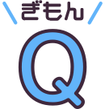

からだのQ&A
気になるぎもんを見つけよう！

わたしたちは、どうやってからだを動かしているの？
脳の中の一番大きい部分、【大脳】から脊髄(せきずい)へ命令を出し、そこから体中の筋肉をコントロールしているよ。
暑いとき、どうして汗が出るの？
体温を下げるためだよ。汗は体温の調整をするうえで、とっても重要。暑いときには、汗腺（かんせん）で作られた汗が皮膚の表面に出るよ。汗が蒸発（じょうはつ）するときに熱がうばわれるため、体温がさがるんだ。また、皮膚の血管を広げ、温度があがった血液をたくさん流すことによって熱を逃がすよ。
息を吸ったり、吐いたり……。なぜ呼吸が必要なの？
生きるためのエネルギー作りに酸素が絶対に必要だからだよ。人間や動物は生きるために必要なエネルギーを、毎日の食事から吸収し、作り出している。 食べ物は、口、胃、腸〈十二指腸（じゅうにしちょう）、小腸、大腸〉を通っている間に、消化液などによって分解され、 体に吸収しやすい養分に変わるよ。この養分のうち、ブドウ糖という栄養がエネルギーの主なもとになるんだ。体の中で、このブドウ糖などの栄養と、呼吸で取り入れた酸素が結びつくと、エネルギーが生まれるよ。そして、酸素が使われて、エネルギーが生まれたあとには、二酸化炭素ができるんだ。二酸化炭素は、体内にあると有害（ゆうがい）なため、肺から呼吸により体の外に吐（は）き出されるよ。
※このサイトページの文章は、中外製薬株式会社より許諾を得た上で、「ウェブサイト利用規定」にのっとりホームページのコラムテキストを一部抜粋して作成しています。
出典: https://www.chugai-pharm.co.jp/ptn/medicine/karada/index.html